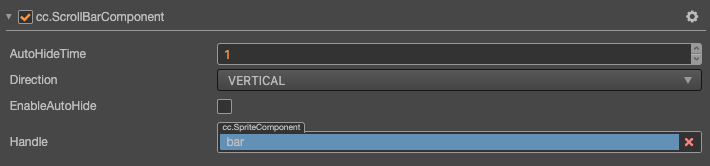

ScrollBar 组件参考
ScrollBar 允许用户通过拖动滑块来滚动一张图片（公测版本暂不支持），它与 Slider 组件有点类似，但是它主要是用于滚动而 Slider 则用来设置数值。

点击 属性检查器 下面的 添加组件 按钮，然后选择 UI/ScrollBar 即可添加 ScrollBar 组件到节点上。
ScrollBar 属性
| 属性 | 功能说明 |
|---|---|
| Handle | ScrollBar 前景图片，它的长度/宽度会根据 ScrollView 的 content 的大小和实际显示区域的大小来计算。 |
| Direction | 滚动方向，目前包含水平和垂直两个方向。 |
| Enable Auto Hide | 是否开启自动隐藏，如果开启了，那么在 ScrollBar 显示后的 Auto Hide Time 时间内会自动消失。 |
| Auto Hide Time | 自动隐藏时间，需要配合设置 Enable Auto Hide |
详细说明
ScrollBar 一般不会单独使用，它需要与 ScrollView 配合使用，另外 ScrollBar 需要指定一个 Sprite 组件，即属性面板里面的 Handle。
通常我们还会给 ScrollBar 指定一张背景图片，用来指示整个 ScrollBar 的长度或者宽度。